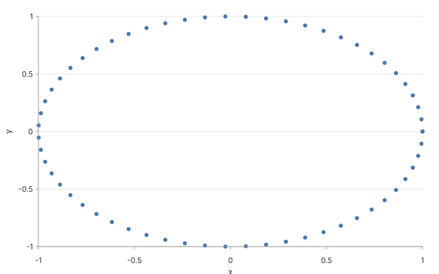

Animated trajectory
A unit circle traced parametrically by
(cos t, sin t) with an animation block that scrubs
through t across 6 seconds. The compiler stays
untouched — the "function" data shape produces the
rows, and animation.kind: "scrub" tells the renderer
which t-slice to paint per frame. Zero
special-case code for the combination.

↑ One frame from the scrubbable spec. In the playground the chart
re-renders every frame_field tick.
Spec
{
"version": "glyph/0.1",
"data": {
"function": {
"shape": "function",
"parameter": { "name": "t", "min": 0, "max": 6.283185307179586, "samples": 60 },
"xExpr": "cos(t)",
"yExpr": "sin(t)"
}
},
"layers": [
{
"mark": "point",
"encoding": {
"x": {
"field": "x",
"type": "quantitative",
"scale": { "domain": [-1.2, 1.2] }
},
"y": {
"field": "y",
"type": "quantitative",
"scale": { "domain": [-1.2, 1.2] }
}
}
}
],
"animation": { "kind": "scrub", "duration_ms": 6000, "frame_field": "t" }
}
Why this matters: the parametric block in
data.function was added in Math PR2, the scrub
animation block predates Math Phase 1, and their composition
required no changes to either. That's the
orthogonality bet — data shapes, marks, and animations stay
independent so the combinatorics work for users instead of against
maintainers.